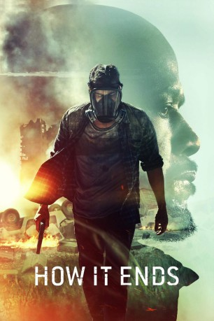

#9252 How It Ends
 
 IMDB-Wertung: 5.0 / 10
IMDB-Wertung: 5.0 / 10  Tomatometer: 19
Tomatometer: 19  Metascore: 36
Metascore: 36 
Mysteriöses Ereignisse lassen die Welt ganz plötzlich im totalen Chaos versinken. Und mittendrin versucht Will um jeden Preis nach Hause zu seiner schwangeren Frau Samantha auf der anderen Seite des Landes zu gelangen. Begleitet wird er dabei von seinem Schwiegervater, dem Ex-Soldaten Tom, der nur wenig begeistert von dem Mann seiner Tochter ist. Doch die darüber hinaus stellt sich auch die Frage, was der Ursprung der seltsamen und das Überleben der Menschheit bedrohenden Vorkommnisse. Sind sie natürlichen Ursprungs oder steckt eine treibende Kraft dahinter?
Jahr: 2018
Dauer: 113 Minuten
FSK:
Land: Kanada Studio: NetflixTonspuren: DD5.1 - ,
Untertitel: Deutsch, Englisch,
Auflösung: 1080p (1920x1080) Größe: 3164 MB
Genre: Action, Thriller, Drama, Sci-Fi, Abenteuer, Mystery
Regisseur: David M. Rosenthal
Drehbuch: Brooks McLaren
Soundtrack: Atli Örvarsson
Darsteller:
 Theo James als Will Younger
Theo James als Will Younger Kat Graham als Samantha Sutherland
Kat Graham als Samantha Sutherland Nancy Sorel als Sonographer
Nancy Sorel als Sonographer Nicole Ari Parker als Paula Sutherland
Nicole Ari Parker als Paula Sutherland Forest Whitaker als Tom Sutherland
Forest Whitaker als Tom Sutherland- Anett Rumanoczky als Flight Attendant
- Cheryl Gensiorek als Airport Bar Woman
- Ron Verwymeren als Lakepoint Tower Doorman
- RJ Fetherstonhaugh als Soldier
 Aaron Hughes als Dan
Aaron Hughes als Dan- Lanie McAuley als Liza
- Josh Cruddas als Chad
- Aidan Ritchie als Randy
- Rick Skene als Convict
- Grace Dove als Ricki
 Eric Keenleyside als Sheriff Reynolds
Eric Keenleyside als Sheriff Reynolds Kerry Bishé als Meg
Kerry Bishé als Meg- Haig Sutherland als Gas Thief Tyler
- Cory Chetyrbok als Gas Thief Martin
 David Lewis als Wagoneer Man
David Lewis als Wagoneer Man- Charis Ann Wiens als Wagoneer Woman
 Mark O'Brien als Jeremiah
Mark O'Brien als Jeremiah- Stefanie Austin als Female Soldier (uncredited)
- Andres Collantes als High School Boy #2 (uncredited)
- Cindy Myskiw als Pedestrian (uncredited)
 Lorrie Papadopoulos als Civilian Militia / Driver at Soldier Checkpoint (uncredited)
Lorrie Papadopoulos als Civilian Militia / Driver at Soldier Checkpoint (uncredited)- Connor Peterson als Refugee (uncredited)
- Derek James Trapp als Pedestrian (uncredited)
- Jeff Wahl als Hayden (uncredited)
- J.J. Ramberg als Newscaster
- Harpreet Singh Kanda als Town Car Driver
- Storm Greyeyes als Ricki's Father
- Drew Jensen als High School Boy
- Pat Harris als Officer Harris
- Nancy Sivak als Woman in Fire
- Juliette Hitchcock als Wagoneer Girl
- Connie Hollins als Pedestrian (uncredited)
- Jim Kirby als Traveller (uncredited)
- Michael Manuel Oliveira als Refugee (uncredited)
- Steve Pacaud als Pedestrian (uncredited)
- Darren Sheehan als Tourist (uncredited)
Datei: X:\2018(G-M)\How It Ends (2018, FSK, 1920x1080).mkv seit 20.07.2018
Festplatte: HD 2018(G-Z)-2019(A-Z)
 Es gibt insgesamt 138 Filme in der Gruppe '2018(G-M)'
Es gibt insgesamt 138 Filme in der Gruppe '2018(G-M)'